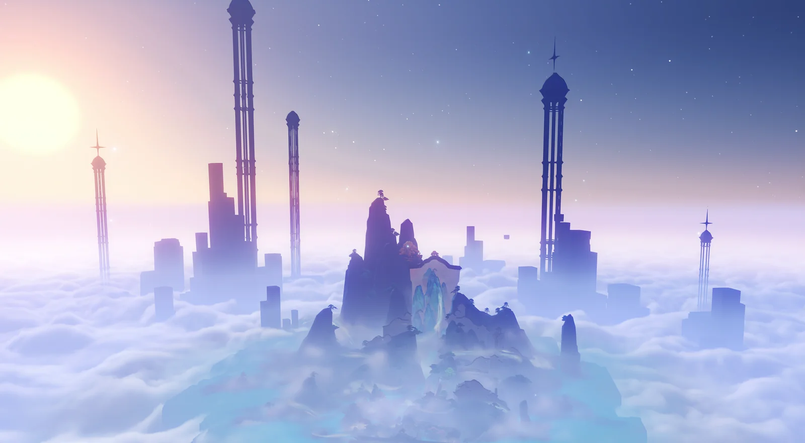
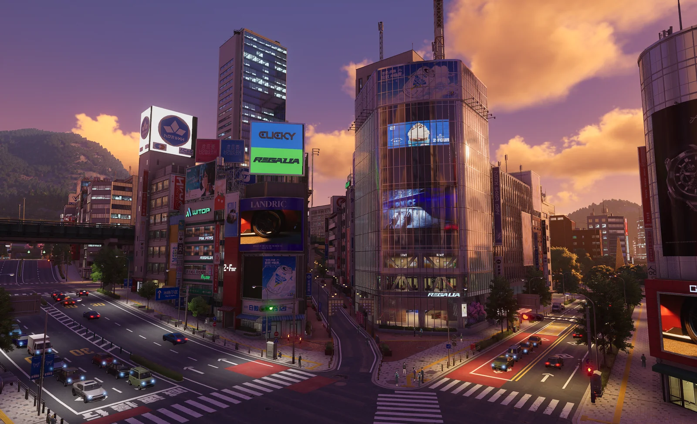
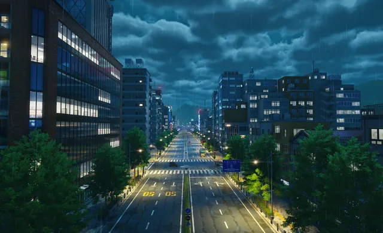
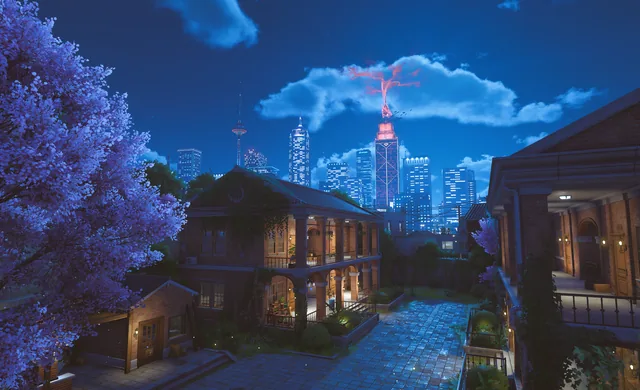
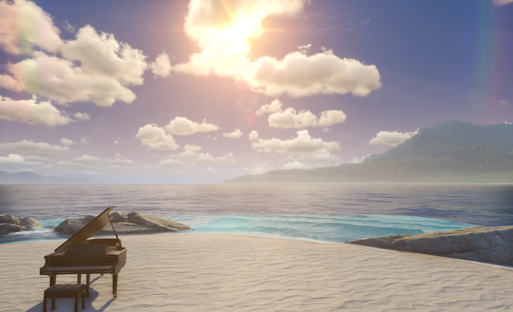

夜空的弧线
放映目录
风景放慢以后
玩游戏时，有些地方值得停下来多看一会儿。比如天色一点点暗下来的街口，雪停后的湖面，或者一朵云正好盖住远处尖塔的那一刻。
这一页把几张壁纸排成一趟小小的旅程。先去云上，再回到街边，最后在海边停一会儿。


云海 · 幻境
云上与星野
日光先碰到塔尖，最后才落到云海上。再往远处看，那些起伏的轮廓像刚从梦里浮出来，连地平线都辨不清了。
同样的蓝色到了夜里又换了模样。洞里的花发着光，山那边浮着一弯月，沿着光走，就能找到下一幕。



黄昏 · 街景
城里的灯
傍晚最有意思的是交界那几分钟。玻璃楼上还挂着一层晚霞，下面的车灯和招牌已经亮了。站在路口，好像能同时看到白天和夜晚。
再拐过一条街，声音就轻了。路灯把树影留在地上，远处的楼群还亮着，走慢一点也没关系。






花开 · 海风 · 初雪
四季有声
春天的路被樱花遮住一半。到了夏天，风从金黄的花田上掠过去。雪把湖边的声音收得很轻，水却还留着一抹蓝。
最后把镜头留给海边的钢琴。从画面里听不见琴声，但潮水已经一遍遍替它数着拍子。